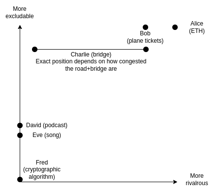
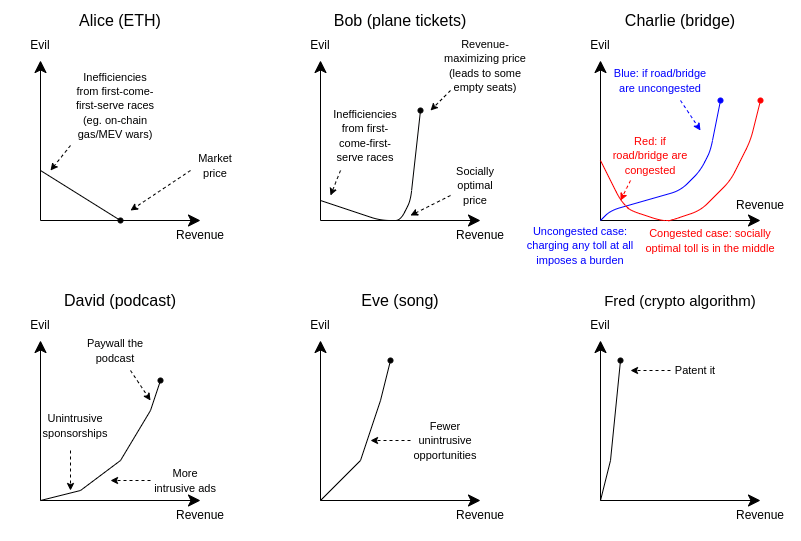
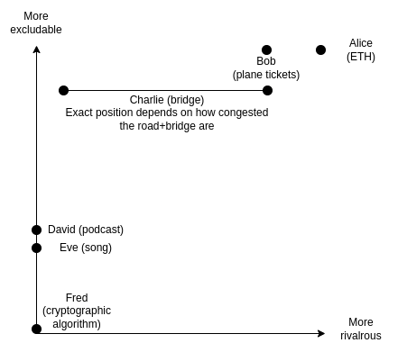
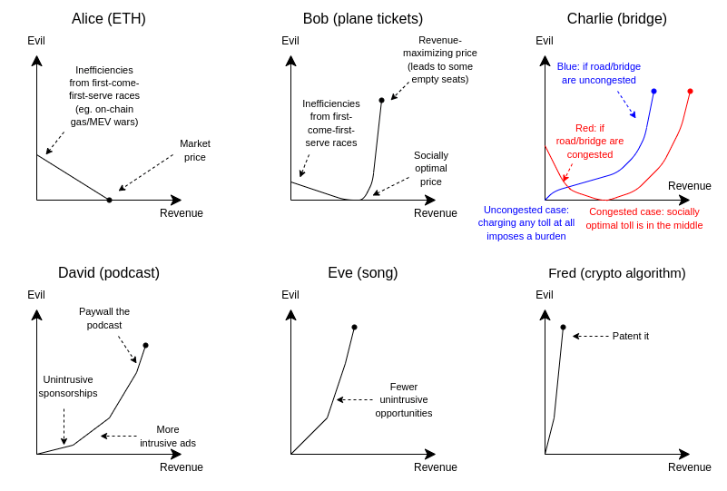

The Revenue-Evil Curve: a different way to think about prioritizing public goods funding
2022 Oct 28
See all posts
The Revenue-Evil Curve: a different way to think about prioritizing public goods funding
Special thanks to Karl Floersch, Hasu and Tina Zhen for feedback
and review.
Public goods are an incredibly important topic in any large-scale
ecosystem, but they are also one that is often surprisingly tricky to
define. There is an economist definition of public goods - goods that
are non-excludable and non-rivalrous, two technical terms that taken
together mean that it's difficult to provide them through private
property and market-based means. There is a layman's definition of
public good: "anything that is good for the public". And there is a
democracy enthusiast's definition of public good, which includes
connotations of public participation in decision-making.
But more importantly, when the abstract category of non-excludable
non-rivalrous public goods interacts with the real world, in almost any
specific case there are all kinds of subtle edge cases that need to be
treated differently. A park is a public good. But what if you add a $5
entrance fee? What if you fund it by auctioning off the right to have a
statue of the winner in the park's central square? What if it's
maintained by a semi-altruistic billionaire that enjoys the park for
personal use, and designs the park around their personal use, but still
leaves it open for anyone to visit?
This post will attempt to provide a different way of analyzing
"hybrid" goods on the spectrum between private and public: the
revenue-evil curve. We ask the question: what are the tradeoffs
of different ways to monetize a given project, and how much good can be
done by adding external subsidies to remove the pressure to monetize?
This is far from a universal framework: it assumes a "mixed-economy"
setting in a single monolithic "community" with a commercial market
combined with subsidies from a central funder. But it can still tell us
a lot about how to approach funding public goods in crypto communities,
countries and many other real-world contexts today.
The
traditional framework: excludability and rivalrousness
Let us start off by understanding how the usual economist lens views
which projects are private vs public goods. Consider the following
examples:
- Alice owns 1000 ETH, and wants to sell it on the market.
- Bob runs an airline, and sells tickets for a flight.
- Charlie builds a bridge, and charges a toll to pay for it.
- David makes and releases a podcast.
- Eve makes and releases a song.
- Fred invents a new and better cryptographic algorithm for making
zero knowledge proofs.
We put these situations on a chart with two axes:
- Rivalrousness: to what extent does one person
enjoying the good reduce another person's ability to enjoy it?
- Excludability: how difficult is it to prevent
specific individuals, eg. those who do not pay, from enjoying the
good?
Such a chart might look like this:

- Alice's ETH is completely excludable (she has total power to choose
who gets her coins), and crypto coins are rivalrous (if one person owns
a particular coin, no one else owns that same coin)
- Bob's plane tickets are excludable, but a tiny bit less rivalrous:
there's a chance the plane won't be full.
- Charlie's bridge is a bit less excludable than plane tickets,
because adding a gate to verify payment of tolls takes extra effort (so
Charlie can exclude but it's costly, both to him and to users), and its
rivalrousness depends on whether the road is congested or not.
- David's podcast and Eve's song are not rivalrous: one person
listening to it does not interfere with another person doing the same.
They're a little bit excludable, because you can make a paywall but
people can circumvent the paywall.
- And Fred's cryptographic algorithm is close to not excludable at
all: it needs to be open-source for people to trust it, and if Fred
tries to patent it, the target user base (open-source-loving crypto
users) may well refuse to use the algorithm and even cancel him for
it.
This is all a good and important analysis. Excludability tells us
whether or not you can fund the project by charging a toll as a business
model, and rivalrousness tells us whether exclusion is a tragic waste or
if it's just an unavoidable property of the good in question that if one
person gets it another does not. But if we look at some of the examples
carefully, especially the digital examples, we start to see that it
misses a very important issue: there are many business models
available other than exclusion, and those business models have
tradeoffs too.
Consider one particular case: David's podcast versus Eve's song. In
practice, a huge number of podcasts are released mostly or completely
freely, but songs are more often gated with licensing and copyright
restrictions. To see why, we need only look at how these podcasts are
funded: sponsorships. Podcast hosts typically find a few sponsors, and
talk about the sponsors briefly at the start or middle of each episode.
Sponsoring songs is harder: you can't suddenly start talking about how
awesome Athletic Greens* are in the middle of a
love song, because come on, it kills the vibe, man!
Can we get beyond focusing solely on exclusion, and talk about
monetization and the harms of different monetization strategies more
generally? Indeed we can, and this is exactly what the revenue/evil
curve is about.
The revenue-evil curve,
defined
The revenue-evil curve of a product is a two-dimensional curve that
plots the answer to the following question:
How much harm would the product's creator have to inflict on
their potential users and the wider community to earn $N of revenue to
pay for building the product?
The word "evil" here is absolutely not meant to imply that no
quantity of evil is acceptable, and that if you can't fund a project
without committing evil you should not do it at all. Many projects make
hard tradeoffs that hurt their customers and community in order to
ensure sustainable funding, and often the value of the project existing
at all greatly outweighs these harms. But nevertheless, the goal is to
highlight that there is a tragic aspect to many monetization
schemes, and public goods funding can provide value by giving existing
projects a financial cushion that enables them to avoid such
sacrifices.
Here is a rough attempt at plotting the revenue-evil curves of our
six examples above:

- For Alice, selling her ETH at market price is actually the
most compassionate thing she could do. If she sells more
cheaply, she will almost certainly create an on-chain gas war, trader
HFT war, or other similarly value-destructive financial conflict between
everyone trying to claim her coins the fastest. Selling above market
price is not even an option: no one would buy.
- For Bob, the socially-optimal price to sell at is the highest price
at which all tickets get sold out. If Bob sells below that price,
tickets will sell out quickly and some people will not be able to get
seats at all even if they really need them (underpricing may have a few
countervailing benefits by giving opportunities to poor people, but it
is far from the most
efficient way to achieve that goal). Bob could also sell
above market price and potentially earn a higher profit at the
cost of selling fewer seats and (from the god's-eye perspective)
needlessly excluding people.
- If Charlie's bridge and the road leading to it are uncongested,
charging any toll at all imposes a burden and needlessly excludes
drivers. If they are congested, low tolls help by reducing congestion
and high tolls needlessly exclude people.
- David's podcast can monetize to some extent without hurting
listeners much by adding advertisements from sponsors. If pressure to
monetize increases, David would have to adopt more and more intrusive
forms of advertising, and truly maxing out on revenue would require
paywalling the podcast, a high cost to potential listeners.
- Eve is in the same position as David, but with fewer low-harm
options (perhaps selling an NFT?). Especially in Eve's case, paywalling
may well require actively participating in the legal apparatus of
copyright enforcement and suing infringers, which carries further
harms.
- Fred has even fewer monetization options. He could patent it, or
potentially do exotic things like auction off the right to choose
parameters so that hardware manufacturers that favor particular values
would bid on it. All options are high-cost.
What we see here is that there are actually many kinds of "evil" on
the revenue-evil curve:
- Traditional economic
deadweight loss from exclusion: if a product is priced
above marginal cost, mutually beneficial transactions that could have
taken place do not take place
- Race conditions: congestion, shortages and other
costs from products being too cheap.
- "Polluting" the product in ways that make it
appealing to a sponsor, but is harmful to a (maybe small, maybe large)
degree to listeners.
- Engaging in offensive actions through the legal
system, which increases everyone's fear and need to spend money
on lawyers, and has all kinds of hard-to-predict secondary chilling
effects. This is particularly severe in the case of patenting.
- Sacrificing on principles highly valued by the
users, the community and even the people working on the project
itself.
In many cases, this evil is very context-dependent. Patenting is both
extremely harmful and ideologically offensive within the crypto space
and software more broadly, but this is less true in industries building
physical goods: in physical goods industries, most people who
realistically can create a derivative work of something patented are
going to be large and well-organized enough to negotiate for a license,
and capital costs mean that the need for monetization is much higher and
hence maintaining purity is harder. To what extent advertisements are
harmful depends on the advertiser and the audience: if the podcaster
understands the audience very well, ads can even be helpful!
Whether or not the possibility to "exclude" even exists depends on
property rights.
But by talking about committing evil for the sake of earning revenue
in general terms, we gain the ability to compare these situations
against each other.
What
does the revenue-evil curve tell us about funding prioritization?
Now, let's get back to the key question of why we care about what is
a public good and what is not: funding prioritization. If we have a
limited pool of capital that is dedicated to helping a community
prosper, which things should we direct funding to? The revenue-evil
curve graphic gives us a simple starting point for an answer:
direct funds toward those projects where the slope of the
revenue-evil curve is the steepest.
We should focus on projects where each $1 of subsidies, by reducing
the pressure to monetize, most greatly reduces the evil that is
unfortunately required to make the project possible. This gives us
roughly this ranking:
- Top of the line are "pure" public goods, because
often there aren't any ways to monetize them at all, or if there are,
the economic or moral costs of trying to monetize are extremely
high.
- Second priority is "naturally" public but monetizable
goods that can be funded through commercial channels by
tweaking them a bit, like songs or sponsorships to a podcast.
- Third priority is non-commodity-like private goods
where social welfare is already optimized by charging a fee,
but where profit margins are high or more generally there are
opportunities to "pollute" the product to increase revenue, eg. by
keeping accompanying software closed-source or refusing to use
standards, and subsidies could be used to push such projects to make
more pro-social choices on the margin.
Notice that the excludability and rivalrousness framework usually
outputs similar answers: focus on non-excludable and non-rivalrous goods
first, excludable goods but non-rivalrous second, and excludable and
partially rivalrous goods last - and excludable and rivalrous goods
never (if you have capital left over, it's better to just give it out as
a UBI). There is a rough approximate mapping between revenue/evil curves
and excludability and rivalrousness: higher excludability means lower
slope of the revenue/evil curve, and rivalrousness tells us whether the
bottom of the revenue/evil curve is zero or nonzero. But the
revenue/evil curve is a much more general tool, which allows us to talk
about tradeoffs of monetization strategies that go far beyond
exclusion.
One practical example of how this framework can be used to analyze
decision-making is Wikimedia donations. I personally have never donated
to Wikimedia, because I've always thought that they could and should
fund themselves without relying on limited public-goods-funding capital
by just adding a few advertisements, and this would be only a small cost
to their user experience and neutrality. Wikipedia admins, however,
disagree; they even have a
wiki page listing their arguments why they disagree.
We can understand this disagreement as a dispute over revenue-evil
curves: I think Wikimedia's revenue-evil curve has a low slope ("ads are
not that bad"), and therefore they are low priority for my charity
dollars; some other people think their revenue-evil curve has a high
slope, and therefore they are high priority for their charity
dollars.
One important conclusion that it is important NOT to take from this
idea is that we should try to use revenue-evil curves directly as a way
of prioritizing individual projects. There are severe constraints on our
ability to do this because of limits to monitoring.
If this framework is widely used, projects would have an incentive to
misrepresent their revenue-evil curves. Anyone charging a toll would
have an incentive to come up with clever arguments to try to show that
the world would be much better if the toll could be 20% lower, but
because they're desperately under-budget, they just can't lower the toll
without subsidies. Projects would have an incentive to be more
evil in the short term, to attract subsidies that help them become less
evil.
For these reasons, it is probably best to use the framework not as a
way to allocate decisions directly, but to identify general principles
for what kinds of projects to prioritize funding for. For example, the
framework can be a valid way to determine how to prioritize whole
industries or whole categories of goods. It can help you answer
questions like: if a company is producing a public good, or is making
pro-social but financially costly choices in the design of a
not-quite-public good, do they deserve subsidies for that? But even
here, it's better to treat revenue-evil curves as a mental tool, rather
than attempting to precisely measure them and use them to make
individual decisions.
Conclusions
Excludability and rivalrousness are important dimensions of a good,
that have really important consequences for its ability to monetize
itself, and for answering the question of how much harm can be averted
by funding it out of some public pot. But especially once more complex
projects enter the fray, these two dimensions quickly start to become
insufficient for determining how to prioritize funding. Most things are
not pure public goods: they are some hybrid in the middle, and there are
many dimensions on which they could become more or less public that do
not easily map to "exclusion".
Looking at the revenue-evil curve of a project gives us another way
of measuring the statistic that really matters: how much harm can be
averted by relieving a project of one dollar of monetization pressure?
Sometimes, the gains from relieving monetization pressure are decisive:
there just is no way to fund certain kinds of things through commercial
channels, until you can find one single user that benefits from them
enough to fund them unilaterally. Other times, commercial funding
options exist, but have harmful side effects. Sometimes these effects
are smaller, sometimes they are greater. Sometimes a small piece of an
individual project has a clear tradeoff between pro-social choices and
increasing monetization. And, still other times, projects just fund
themselves, and there is no need to subsidize them - or at least,
uncertainties and hidden information make it too hard to create a
subsidy schedule that does more good than harm. It's always better to
prioritize funding in order of greatest gains to smallest; and how far
you can go depends on how much funding you have.
* I did not accept sponsorship money from
Athletic Greens. But the
podcaster Lex Fridman did. And no, I did not accept sponsorship money
from Lex Fridman either. But maybe someone else did. Whatevs man, as
long as we can keep getting podcasts funded so they can be
free-to-listen without annoying people too much, it's all good, you
know?
The Revenue-Evil Curve: a different way to think about prioritizing public goods funding
2022 Oct 28 See all postsSpecial thanks to Karl Floersch, Hasu and Tina Zhen for feedback and review.
Public goods are an incredibly important topic in any large-scale ecosystem, but they are also one that is often surprisingly tricky to define. There is an economist definition of public goods - goods that are non-excludable and non-rivalrous, two technical terms that taken together mean that it's difficult to provide them through private property and market-based means. There is a layman's definition of public good: "anything that is good for the public". And there is a democracy enthusiast's definition of public good, which includes connotations of public participation in decision-making.
But more importantly, when the abstract category of non-excludable non-rivalrous public goods interacts with the real world, in almost any specific case there are all kinds of subtle edge cases that need to be treated differently. A park is a public good. But what if you add a $5 entrance fee? What if you fund it by auctioning off the right to have a statue of the winner in the park's central square? What if it's maintained by a semi-altruistic billionaire that enjoys the park for personal use, and designs the park around their personal use, but still leaves it open for anyone to visit?
This post will attempt to provide a different way of analyzing "hybrid" goods on the spectrum between private and public: the revenue-evil curve. We ask the question: what are the tradeoffs of different ways to monetize a given project, and how much good can be done by adding external subsidies to remove the pressure to monetize? This is far from a universal framework: it assumes a "mixed-economy" setting in a single monolithic "community" with a commercial market combined with subsidies from a central funder. But it can still tell us a lot about how to approach funding public goods in crypto communities, countries and many other real-world contexts today.
The traditional framework: excludability and rivalrousness
Let us start off by understanding how the usual economist lens views which projects are private vs public goods. Consider the following examples:
We put these situations on a chart with two axes:
Such a chart might look like this:

This is all a good and important analysis. Excludability tells us whether or not you can fund the project by charging a toll as a business model, and rivalrousness tells us whether exclusion is a tragic waste or if it's just an unavoidable property of the good in question that if one person gets it another does not. But if we look at some of the examples carefully, especially the digital examples, we start to see that it misses a very important issue: there are many business models available other than exclusion, and those business models have tradeoffs too.
Consider one particular case: David's podcast versus Eve's song. In practice, a huge number of podcasts are released mostly or completely freely, but songs are more often gated with licensing and copyright restrictions. To see why, we need only look at how these podcasts are funded: sponsorships. Podcast hosts typically find a few sponsors, and talk about the sponsors briefly at the start or middle of each episode. Sponsoring songs is harder: you can't suddenly start talking about how awesome Athletic Greens* are in the middle of a love song, because come on, it kills the vibe, man!
Can we get beyond focusing solely on exclusion, and talk about monetization and the harms of different monetization strategies more generally? Indeed we can, and this is exactly what the revenue/evil curve is about.
The revenue-evil curve, defined
The revenue-evil curve of a product is a two-dimensional curve that plots the answer to the following question:
The word "evil" here is absolutely not meant to imply that no quantity of evil is acceptable, and that if you can't fund a project without committing evil you should not do it at all. Many projects make hard tradeoffs that hurt their customers and community in order to ensure sustainable funding, and often the value of the project existing at all greatly outweighs these harms. But nevertheless, the goal is to highlight that there is a tragic aspect to many monetization schemes, and public goods funding can provide value by giving existing projects a financial cushion that enables them to avoid such sacrifices.
Here is a rough attempt at plotting the revenue-evil curves of our six examples above:

What we see here is that there are actually many kinds of "evil" on the revenue-evil curve:
In many cases, this evil is very context-dependent. Patenting is both extremely harmful and ideologically offensive within the crypto space and software more broadly, but this is less true in industries building physical goods: in physical goods industries, most people who realistically can create a derivative work of something patented are going to be large and well-organized enough to negotiate for a license, and capital costs mean that the need for monetization is much higher and hence maintaining purity is harder. To what extent advertisements are harmful depends on the advertiser and the audience: if the podcaster understands the audience very well, ads can even be helpful! Whether or not the possibility to "exclude" even exists depends on property rights.
But by talking about committing evil for the sake of earning revenue in general terms, we gain the ability to compare these situations against each other.
What does the revenue-evil curve tell us about funding prioritization?
Now, let's get back to the key question of why we care about what is a public good and what is not: funding prioritization. If we have a limited pool of capital that is dedicated to helping a community prosper, which things should we direct funding to? The revenue-evil curve graphic gives us a simple starting point for an answer: direct funds toward those projects where the slope of the revenue-evil curve is the steepest.
We should focus on projects where each $1 of subsidies, by reducing the pressure to monetize, most greatly reduces the evil that is unfortunately required to make the project possible. This gives us roughly this ranking:
Notice that the excludability and rivalrousness framework usually outputs similar answers: focus on non-excludable and non-rivalrous goods first, excludable goods but non-rivalrous second, and excludable and partially rivalrous goods last - and excludable and rivalrous goods never (if you have capital left over, it's better to just give it out as a UBI). There is a rough approximate mapping between revenue/evil curves and excludability and rivalrousness: higher excludability means lower slope of the revenue/evil curve, and rivalrousness tells us whether the bottom of the revenue/evil curve is zero or nonzero. But the revenue/evil curve is a much more general tool, which allows us to talk about tradeoffs of monetization strategies that go far beyond exclusion.
One practical example of how this framework can be used to analyze decision-making is Wikimedia donations. I personally have never donated to Wikimedia, because I've always thought that they could and should fund themselves without relying on limited public-goods-funding capital by just adding a few advertisements, and this would be only a small cost to their user experience and neutrality. Wikipedia admins, however, disagree; they even have a wiki page listing their arguments why they disagree.
We can understand this disagreement as a dispute over revenue-evil curves: I think Wikimedia's revenue-evil curve has a low slope ("ads are not that bad"), and therefore they are low priority for my charity dollars; some other people think their revenue-evil curve has a high slope, and therefore they are high priority for their charity dollars.
Revenue-evil curves are an intellectual tool, NOT a good direct mechanism
One important conclusion that it is important NOT to take from this idea is that we should try to use revenue-evil curves directly as a way of prioritizing individual projects. There are severe constraints on our ability to do this because of limits to monitoring.
If this framework is widely used, projects would have an incentive to misrepresent their revenue-evil curves. Anyone charging a toll would have an incentive to come up with clever arguments to try to show that the world would be much better if the toll could be 20% lower, but because they're desperately under-budget, they just can't lower the toll without subsidies. Projects would have an incentive to be more evil in the short term, to attract subsidies that help them become less evil.
For these reasons, it is probably best to use the framework not as a way to allocate decisions directly, but to identify general principles for what kinds of projects to prioritize funding for. For example, the framework can be a valid way to determine how to prioritize whole industries or whole categories of goods. It can help you answer questions like: if a company is producing a public good, or is making pro-social but financially costly choices in the design of a not-quite-public good, do they deserve subsidies for that? But even here, it's better to treat revenue-evil curves as a mental tool, rather than attempting to precisely measure them and use them to make individual decisions.
Conclusions
Excludability and rivalrousness are important dimensions of a good, that have really important consequences for its ability to monetize itself, and for answering the question of how much harm can be averted by funding it out of some public pot. But especially once more complex projects enter the fray, these two dimensions quickly start to become insufficient for determining how to prioritize funding. Most things are not pure public goods: they are some hybrid in the middle, and there are many dimensions on which they could become more or less public that do not easily map to "exclusion".
Looking at the revenue-evil curve of a project gives us another way of measuring the statistic that really matters: how much harm can be averted by relieving a project of one dollar of monetization pressure? Sometimes, the gains from relieving monetization pressure are decisive: there just is no way to fund certain kinds of things through commercial channels, until you can find one single user that benefits from them enough to fund them unilaterally. Other times, commercial funding options exist, but have harmful side effects. Sometimes these effects are smaller, sometimes they are greater. Sometimes a small piece of an individual project has a clear tradeoff between pro-social choices and increasing monetization. And, still other times, projects just fund themselves, and there is no need to subsidize them - or at least, uncertainties and hidden information make it too hard to create a subsidy schedule that does more good than harm. It's always better to prioritize funding in order of greatest gains to smallest; and how far you can go depends on how much funding you have.
* I did not accept sponsorship money from Athletic Greens. But the podcaster Lex Fridman did. And no, I did not accept sponsorship money from Lex Fridman either. But maybe someone else did. Whatevs man, as long as we can keep getting podcasts funded so they can be free-to-listen without annoying people too much, it's all good, you know?